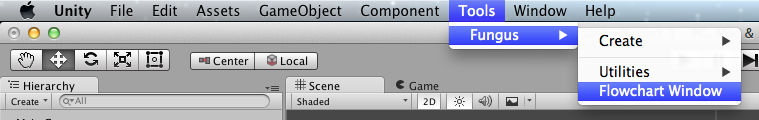
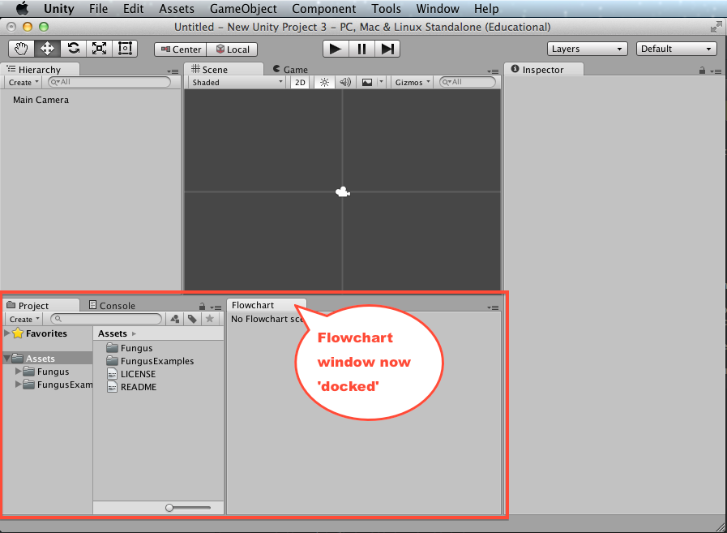
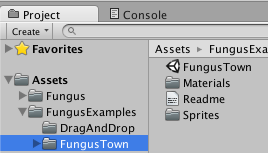
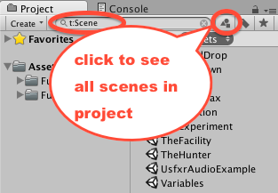
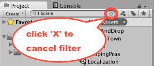
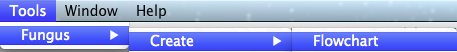
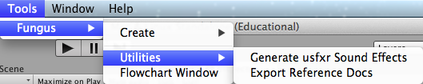
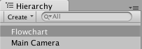
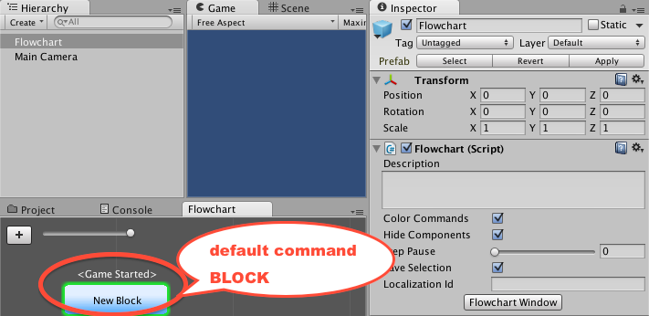

Follow these steps to get up and running with Fungus quickly, then learn more about what Fungus can do and how to do it from the other documentation pages and videos.
The Flowchart window
You'll need the Fungus Flowchart window when working with Fungus. Open and dock this window somewhere handy by following these steps:
- Choose menu:
Tools | Fungus | Flowchart Window

Menu open %Fungus window
- Drag-and-drop the Flowchart window to the location you wish to dock it:

Drag %Fungus window
- The Flowchart window is now docked and part of your Unity window layout:

Docked %Fungus window
Example scenes
Two folders are created when you install Fungus, the Fungus features themslves (in folder 'Fungus') and a set of examples (in folder 'FungusExamples').
Examples include Drag and Drop, Sherlock and Fungus Town:
You can use the left-hand side of the Unity Project window to explore each example folder:

%Fungus Examples Project window
Alternatively, you can 'filter' the Project view to show all scenes (and no other files) by clicking the scene filter icon to the right of the search bar:

%Fungus Examples Project window filter scenes
You can cancel the filter by clicking the 'x' in the search bar:

%Fungus Examples Project window filter scenes cancel
Running the examples
To load an example scene, double click the desired example's scene object in the Project window, and the scene should load. For example, this screenshot shows the scene and Flowchart windows when the DragAndDrop example scene has been loaded:
%Fungus Examples Drag Drop
To run the currently loaded scene (i.e. to enter Play-mode), click the Unity 'play' triangle button at the center top of the Unity application window, and then do whatever makes sense in that scene (e..g click/type text/drag-and-drop objects etc.!):
Note: you click the 'play' button a second time to end Play-mode.
Playmode changes
As with all Unity projects, you can change the properties of gameObjects while a scene is running, but these changes are 'ephemeral' - they only last while the scene is running. As soon as you end play mode the properties of all objects in the Hierarchy will revert to those saved in the Scene file.
This makes it easy to 'tweak' values of objects in Play-mode, and then when the desired behaviour is achieved, those values can be set for the saved scene properties.
Values set when Unity is in Edit-mode will be saved when you saved your scene (CTRL-S / Command-S, or menu: File | Save Scene).
Playmode tint
Sometimes we can forget we are in Unity Play-mode, and then make changes to Hierarchy gameObject values that are then 'fogotton' when we do stop playing the scene. A good way to avoid this problem is to to set a 'tint' to the Unity editor to make it visually very clear to us when we are in Play-mode. To add a tint to Play-mode do the following:
- Open the Unity preferences dialog by choosing menu:
File | Preferences ...
- Select the
Colors preferences, and choose a light colored tint (we chose a light green in this case):
- Close the dialog (changes are saved automatically).
- When you next enter Play-mode you'll see most of the Unity Editor windows turn green (apart from the Game and Flowchart windows):
Creating a new scene
To create a new scene in Unity do the following:
- Choose menu:
File | New Scene
- Note: if you have any unsaved changes for the current scene you need to either save or abandon them before a new scene can be created.
- You should now have a shiny new scene, with a Hierarchy containing just one gameObject, a Main Camera. The new scene will have been give the default name "Untitled", which you can see in the title of the Application window:
- Good practice is to save your scene (in the right place, with the right name), before creating your work in the scene. Let's save this scene in the root of our project "Assets" folder, naming it "demo1". First choose menu:
File | Save Scene As...
- Choose the location and name (we'll choose folders "Assets" and scene name "demo1"):
- Once you have successfully saved the scene you should now see the new scene file "demo1" in your Assets folder in the Project window, and you should also see in the Application window title that you are currently editing the scene named "demo1":
Editing newly saved scene
Menu: Tools | Fungus
The core Fungus operations are available from the Unity Tools menu.
Choose menu: Tools | Fungus to see the options available:
As can be seen, there are 2 submenus, Create and Utilities, plus the Flowchart Window action (which reveals the window if already open, or opens a new window if the Flowchart window was not previously opened).
Menu: Tools | Fungus | Create
The Fungus Tools Create submenu offers the following actions:

%Fungus Tools Create menu
Menu: Tools | Fungus | Utilities
The Fungus Tools Utilties submenu offers the following actions:

%Fungus Tools Utilities menu
Create a Flowchart
To create a Fungus Flowchart do the following:
- Choose menu:
Tools | Fungus | Create Flowchart
- A new Flowchart gameObject should appear in the Hierarchy window.

new Flowchart gameobject
- Select the Flowchart gameObject in the Hierarchy window, and you'll see the Flowchart's properties in the Inspector Window:

Flowchart properties
- If you have not already displayed the Flowchart Window, you can do so by clicking the Flowchart Window button in the Inspector.
- As you can see, when a new Flowchat is created a single command Block named "New Block" is automatically created, with the Event handler "Game Started" (so it will start executing Fungus commands as soon as the scene goes into Play Mode).
Block properties
Let's change the name of the default command Block of a new Flowchart in the Flowchart window to "hello". Do the following:
- Create a new Fungus Flowchart (if you haven't already done so).
- Click to select the Block in the Flowchart window (when multiple blocks are present, the selected one gets a green highlight border).
- In the Inspector change the text for the Block Name property to "hello". You should see the Block name change in the Flowchart window:
Add a command
To add a "Say" command to a Block do the following:
- (setup) Create a new scene, add a Fungus Flowchart to the scene.
- Ensure the Block is selected, and you can see its properties in the Inspector, and ensure the name of the Block is "hello".
- Click the Plus button in the bottom half of the Inspector window, to add a new Command to the Block's properties:
- Choose menu:
Narrative | Say:
- Since this Block only has one Command, that command is automatically selected (shown with a green highlight).
- In the "Story Text" textbox in the bottom half of the Inspector window type in "hello Fugus world":
- Run the scene, and see Fungus create a dialog window, and output the text contents of your Say command:
 1.8.11
1.8.11